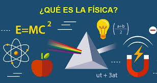
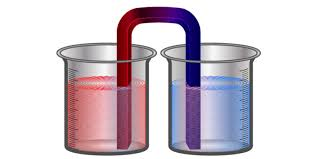
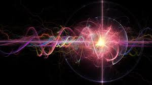

En este curso, exploraremos conceptos fundamentales de la física, como las leyes de Newton, la termodinámica y principios avanzados de la mecánica cuántica y relatividad. El objetivo es brindarte una comprensión clara de cómo las fuerzas y energías afectan a los objetos en el mundo físico.
Objetivos:
Comprender las leyes fundamentales de la física, como las leyes de Newton.
Estudiar la termodinámica y cómo la energía se transforma en sistemas físicos.
Introducirte a los conceptos avanzados de la mecánica cuántica y la relatividad.
Recursos
Leyes de Newton

Explora las tres leyes de Newton, que describen el movimiento de los objetos y las fuerzas que afectan a esos objetos. A través de ejemplos prácticos, entenderás cómo aplicar estas leyes en la vida cotidiana.
Temas cubiertos:
Primera ley de Newton: Ley de la inercia.
Segunda ley de Newton: Ley de la fuerza y aceleración.
Tercera ley de Newton: Acción y reacción.
Termodinámica

Este módulo cubre las leyes de la termodinámica, fundamentales para comprender cómo la energía se transfiere y se transforma en los sistemas físicos. Estos principios tienen aplicaciones en una variedad de áreas, desde motores hasta procesos químicos.
Temas cubiertos:
Primera ley de la termodinámica: Conservación de la energía.
Segunda ley de la termodinámica: Entropía y energía térmica.
Aplicaciones de la termodinámica en la vida cotidiana.
Mecánica Cuántica

La mecánica cuántica nos muestra cómo las partículas subatómicas interactúan de maneras que no podemos observar en la escala macroscópica. Este módulo introduce conceptos como la dualidad onda-partícula y el principio de incertidumbre.
Temas cubiertos:
Principio de incertidumbre de Heisenberg.
Dualidad onda-partícula.
Teoría cuántica de campos y partículas elementales.